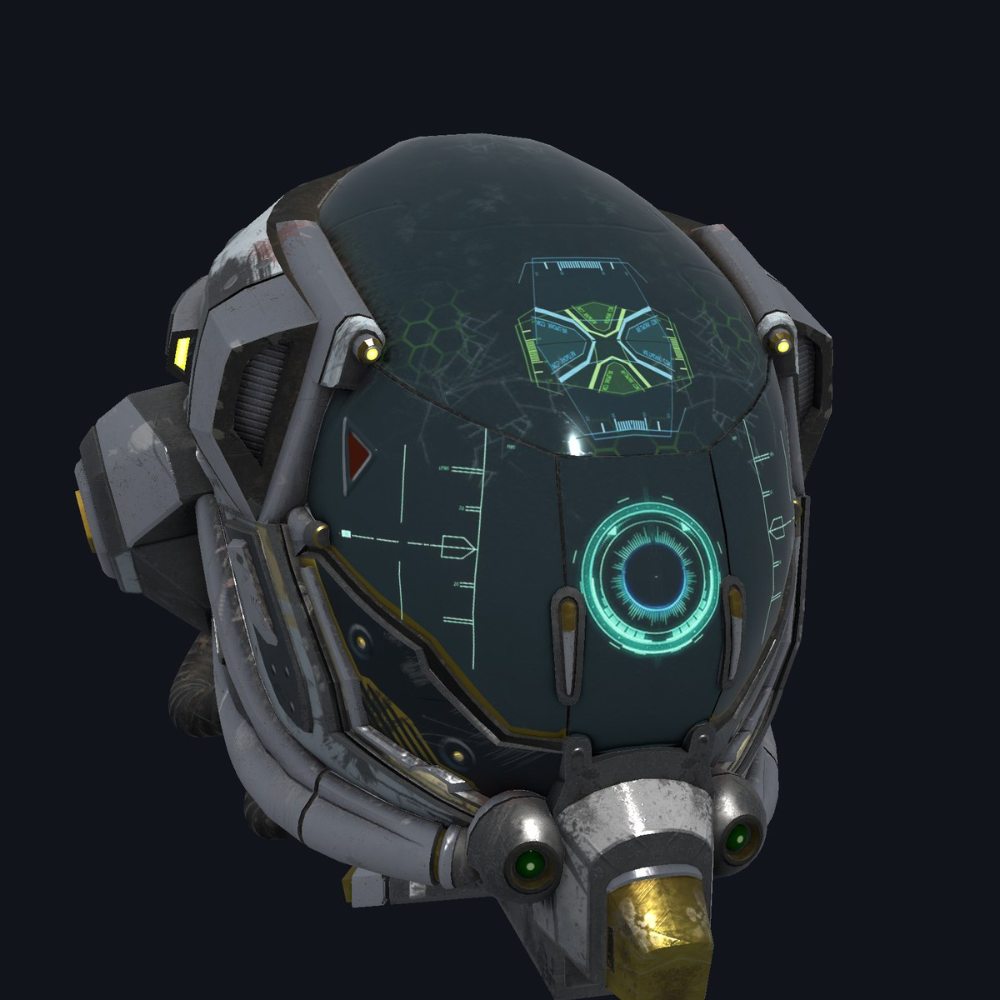
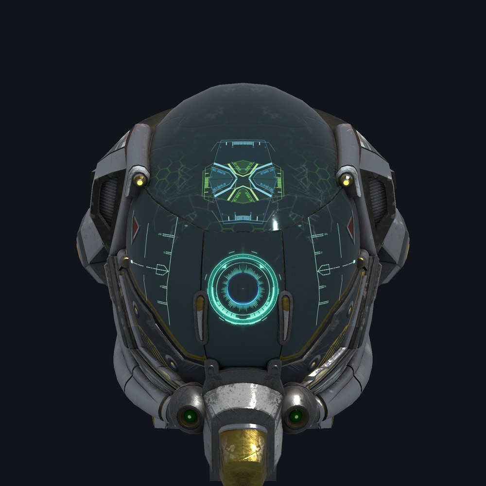

Cómputo, gráficos y machine learning en la GPU
Kernels, modelos PBR, inferencia y entrenamiento de LLM sobre WebGPU. Una sola API para Metal, Vulkan y DirectX 12, en escritorio y en teléfonos, con shaders en WGSL.

Un kernel es un string de WGSL
Buffers de almacenamiento, kernels y dispatches, con los resultados de vuelta en la memoria de Eskiu. Cada llamada que puede fallar regresa un Result con el mensaje de la capa de validación de WebGPU, y un error de WGSL trae su línea y columna.
Debajo, <gpu/raw> es todo webgpu.h y wgpu.h, generado, con el layout de cada struct comprobado contra el compilador de C.
import <io>;
import <gpu>;
string twice = "@group(0) @binding(0) var<storage, read_write> v: array<f32>;\n"
"@compute @workgroup_size(64)\n"
"fn main(@builtin(global_invocation_id) id: vec3<u32>) {\n"
" v[id.x] = v[id.x] * 2.0;\n"
"}\n";
Result<int, string> run() {
float[256] data;
for (i in 0..256) data[i] = (float)i;
Gpu gpu = gpu_open()?;
defer gpu.release();
GpuBuffer v = gpu.storage(&data, sizeof(data))?;
defer v.release();
GpuKernel k = gpu.kernel(twice, "main")?;
defer k.release();
k.bind(0, &v);
k.dispatch(4, 1, 1)?;
v.read(&data, sizeof(data))?;
printf("%.1f\n", (double)data[255]); // 510.0
return Ok<int, string>(0);
}Modelos 3D, el formato de AR y VR
<gpu/gltf> carga glTF 2.0 (.gltf y .glb) y <gpu/obj> OBJ de Wavefront con sus materiales MTL, y <gpu/model> dibuja ambos con sombreado físico, normal maps, modos de alfa, skinning y animación.
PNG y JPEG (baseline y progresivo) se decodifican en Eskiu puro, y las texturas pueden ser sRGB y con mipmaps. <gpu/window> abre una ventana con SDL3, con su teclado y su mouse.
Gltf data = model_load("helmet.glb")?; // or a .gltf, or an .obj
defer data.free();
GpuModel model = gpu.model(&data, surface.format)?;
defer model.release();
// every frame
data.animate(0, seconds);
model.update(mat4_identity());
GpuCamera cam = model.camera(aspect);
GpuPass pass = gpu.pass(frame.view, GpuColor{0.1, 0.1, 0.1, 1.0}, &depth);
model.draw(&pass, &cam);
pass.end()?;
Machine learning en la GPU
<gpu/nn> corre inferencia de transformers desde archivos GGUF, safetensors y llama2.c. El ejemplo de Llama 2 graba el forward pass una vez y lo repite como un solo compute pass por token, en f32, f16, Q8_0 y Q4_0.
| Modelo | Eskiu | Referencia |
|---|---|---|
| stories110M (llama2.c, f16) | 350 tokens/s | llama2.c en CPU: 22 |
| TinyLlama 1.1B Q4_0 | 178 tokens/s | llama.cpp (Metal): 260 |
| Llama 2 7B Q4_0 | 45 tokens/s | llama.cpp (Metal): 58 |
Apple M4 Pro, decodificación greedy. Las salidas coinciden con llama2.c byte por byte, y con llama.cpp y Hugging Face transformers token por token, en los prompts probados.
Entrenamiento con diferenciación automática
<gpu/train> arma un grafo de operaciones y graba el gradiente de cada una. El ejemplo de MNIST llega a 97% de precisión en tres épocas de unos 0.4 segundos, y guarda los pesos como safetensors que PyTorch carga con la misma precisión.
NnGraph g = gpu.nn_graph(100)?;
NnVar x = g.input(784);
NnVar labels = g.labels();
NnVar h = g.relu(g.bias(g.matmul(x, g.param(784, 128, 0.05)), g.param(1, 128, 0.0)));
NnVar logits = g.bias(g.matmul(h, g.param(128, 10, 0.125)), g.param(1, 10, 0.0));
NnVar loss = g.cross_entropy(logits, labels);
g.backward(loss)?; // the gradients of every operation
g.adam(0.001); // and the optimizer stepDónde corre
Los módulos de GPU pasan por wgpu-native, en escritorio y en teléfonos. En una app de eskiu-lang/ui, <gpu/ui> monta un GpuView donde dibujar (un CAMetalLayer en iOS, un SurfaceView en Android). En el navegador WebGPU es el del propio navegador, que no puede bloquearse esperando a la GPU, así que ahí los módulos de GPU están planeados. Lo demás es Eskiu puro y corre en todas las plataformas.
| Plataforma | Backend |
|---|---|
| macOS arm64 | Metal |
| Linux x86-64 | Vulkan |
| Windows x86-64 | DirectX 12, Vulkan |
| iOS (arm64, simulador) | Metal |
| Android (arm64, x86-64) | Vulkan |
| WebAssembly | Los módulos de Eskiu puro (glTF, OBJ, imágenes, GGUF, safetensors, matemáticas) hoy; los módulos de GPU están planeados |
Empieza
El paquete nombra en su manifiesto los archivos de release de wgpu-native: el primer build descarga el de tu máquina, comprueba su SHA-256 y lo enlaza. Una ventana de escritorio necesita además SDL3 (brew install sdl3 en macOS). Requiere Eskiu 0.14 o más nuevo.
eskiuc new myapp && cd myapp
eskiuc add gpu --git https://github.com/eskiu-lang/gpu --rev v0.3.0
eskiuc build